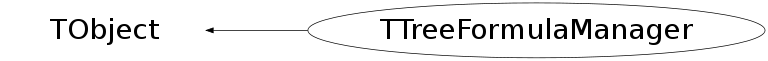

class TTreeFormulaManager: public TObject
A TreeFormulaManager is used to coordinate one or more TTreeFormula objecs
In particular it makes sure that the dimensions and size of all the formulas
is properly coordinated.
Function Members (Methods)
public:
| TTreeFormulaManager() | |
| void | TObject::AbstractMethod(const char* method) const |
| virtual void | Add(TTreeFormula*) |
| virtual void | TObject::AppendPad(Option_t* option = "") |
| virtual void | TObject::Browse(TBrowser* b) |
| static TClass* | Class() |
| virtual const char* | TObject::ClassName() const |
| virtual void | TObject::Clear(Option_t* = "") |
| virtual TObject* | TObject::Clone(const char* newname = "") const |
| virtual Int_t | TObject::Compare(const TObject* obj) const |
| virtual void | TObject::Copy(TObject& object) const |
| virtual void | TObject::Delete(Option_t* option = "")MENU |
| virtual Int_t | TObject::DistancetoPrimitive(Int_t px, Int_t py) |
| virtual void | TObject::Draw(Option_t* option = "") |
| virtual void | TObject::DrawClass() constMENU |
| virtual TObject* | TObject::DrawClone(Option_t* option = "") constMENU |
| virtual void | TObject::Dump() constMENU |
| virtual void | TObject::Error(const char* method, const char* msgfmt) const |
| virtual void | TObject::Execute(const char* method, const char* params, Int_t* error = 0) |
| virtual void | TObject::Execute(TMethod* method, TObjArray* params, Int_t* error = 0) |
| virtual void | TObject::ExecuteEvent(Int_t event, Int_t px, Int_t py) |
| virtual void | TObject::Fatal(const char* method, const char* msgfmt) const |
| virtual TObject* | TObject::FindObject(const char* name) const |
| virtual TObject* | TObject::FindObject(const TObject* obj) const |
| virtual Option_t* | TObject::GetDrawOption() const |
| static Long_t | TObject::GetDtorOnly() |
| virtual const char* | TObject::GetIconName() const |
| virtual Int_t | GetMultiplicity() const |
| virtual const char* | TObject::GetName() const |
| virtual Int_t | GetNdata(Bool_t forceLoadDim = kFALSE) |
| virtual char* | TObject::GetObjectInfo(Int_t px, Int_t py) const |
| static Bool_t | TObject::GetObjectStat() |
| virtual Option_t* | TObject::GetOption() const |
| virtual const char* | TObject::GetTitle() const |
| virtual UInt_t | TObject::GetUniqueID() const |
| virtual Bool_t | TObject::HandleTimer(TTimer* timer) |
| virtual ULong_t | TObject::Hash() const |
| virtual void | TObject::Info(const char* method, const char* msgfmt) const |
| virtual Bool_t | TObject::InheritsFrom(const char* classname) const |
| virtual Bool_t | TObject::InheritsFrom(const TClass* cl) const |
| virtual void | TObject::Inspect() constMENU |
| void | TObject::InvertBit(UInt_t f) |
| virtual TClass* | IsA() const |
| virtual Bool_t | TObject::IsEqual(const TObject* obj) const |
| virtual Bool_t | TObject::IsFolder() const |
| Bool_t | TObject::IsOnHeap() const |
| virtual Bool_t | TObject::IsSortable() const |
| Bool_t | TObject::IsZombie() const |
| virtual void | TObject::ls(Option_t* option = "") const |
| void | TObject::MayNotUse(const char* method) const |
| virtual Bool_t | Notify() |
| void | TObject::Obsolete(const char* method, const char* asOfVers, const char* removedFromVers) const |
| static void | TObject::operator delete(void* ptr) |
| static void | TObject::operator delete(void* ptr, void* vp) |
| static void | TObject::operator delete[](void* ptr) |
| static void | TObject::operator delete[](void* ptr, void* vp) |
| void* | TObject::operator new(size_t sz) |
| void* | TObject::operator new(size_t sz, void* vp) |
| void* | TObject::operator new[](size_t sz) |
| void* | TObject::operator new[](size_t sz, void* vp) |
| virtual void | TObject::Paint(Option_t* option = "") |
| virtual void | TObject::Pop() |
| virtual void | TObject::Print(Option_t* option = "") const |
| virtual Int_t | TObject::Read(const char* name) |
| virtual void | TObject::RecursiveRemove(TObject* obj) |
| virtual void | Remove(TTreeFormula*) |
| void | TObject::ResetBit(UInt_t f) |
| virtual void | TObject::SaveAs(const char* filename = "", Option_t* option = "") constMENU |
| virtual void | TObject::SavePrimitive(ostream& out, Option_t* option = "") |
| void | TObject::SetBit(UInt_t f) |
| void | TObject::SetBit(UInt_t f, Bool_t set) |
| virtual void | TObject::SetDrawOption(Option_t* option = "")MENU |
| static void | TObject::SetDtorOnly(void* obj) |
| static void | TObject::SetObjectStat(Bool_t stat) |
| virtual void | TObject::SetUniqueID(UInt_t uid) |
| virtual void | ShowMembers(TMemberInspector& insp) |
| virtual void | Streamer(TBuffer& b) |
| void | StreamerNVirtual(TBuffer& b) |
| virtual Bool_t | Sync() |
| virtual void | TObject::SysError(const char* method, const char* msgfmt) const |
| Bool_t | TObject::TestBit(UInt_t f) const |
| Int_t | TObject::TestBits(UInt_t f) const |
| virtual void | UpdateFormulaLeaves() |
| virtual void | TObject::UseCurrentStyle() |
| virtual void | TObject::Warning(const char* method, const char* msgfmt) const |
| virtual Int_t | TObject::Write(const char* name = 0, Int_t option = 0, Int_t bufsize = 0) |
| virtual Int_t | TObject::Write(const char* name = 0, Int_t option = 0, Int_t bufsize = 0) const |
protected:
| virtual void | AddVarDims(Int_t virt_dim) |
| virtual void | CancelDimension(Int_t virt_dim) |
| virtual void | TObject::DoError(int level, const char* location, const char* fmt, va_list va) const |
| virtual void | EnableMultiVarDims() |
| void | TObject::MakeZombie() |
| virtual void | UpdateUsedSize(Int_t& virt_dim, Int_t vsize) |
private:
| TTreeFormulaManager(const TTreeFormulaManager&) | |
| (unknown) | () |
| TTreeFormulaManager& | operator=(const TTreeFormulaManager&) |
Data Members
public:
| enum TObject::EStatusBits { | kCanDelete | |
| kMustCleanup | ||
| kObjInCanvas | ||
| kIsReferenced | ||
| kHasUUID | ||
| kCannotPick | ||
| kNoContextMenu | ||
| kInvalidObject | ||
| }; | ||
| enum TObject::[unnamed] { | kIsOnHeap | |
| kNotDeleted | ||
| kZombie | ||
| kBitMask | ||
| kSingleKey | ||
| kOverwrite | ||
| kWriteDelete | ||
| }; |
private:
| Int_t | fCumulUsedSizes[6] | Accumulated size of lower dimensions as seen for this entry |
| TArrayI* | fCumulUsedVarDims | fCumulUsedSizes(1) for multi variable dimensions case |
| TObjArray | fFormulas | |
| Bool_t | fMultiVarDim | True if one of the variable has 2 variable size dimensions. |
| Int_t | fMultiplicity | Indicator of the variability of the formula |
| Int_t | fNdata | ! Last value calculated by GetNdata |
| Bool_t | fNeedSync | Indicate whether a new formula has been added since the last synchronization |
| Int_t | fUsedSizes[6] | Actual size of the dimensions as seen for this entry. |
| TArrayI* | fVarDims[6] | List of variable sizes dimensions. |
| Int_t | fVirtUsedSizes[6] | Virtual size of lower dimensions as seen for this formula |
Class Charts
{kind=link}
{kind=link}
{kind=link}
{kind=link}

Function documentation
TTreeFormulaManager()
-*Tree FormulaManger default constructor *-* ======================================
void Add(TTreeFormula* )
Add a new formula to the list of formulas managed The manager of the formula will be changed and the old one will be deleted if it is empty.
void CancelDimension(Int_t virt_dim)
Cancel a dimension. This is usually called when an out-of-bounds index is used.
Int_t GetNdata(Bool_t forceLoadDim = kFALSE)
-*-*Return number of available instances in the formulas *-* ====================================================
void UpdateFormulaLeaves()
this function could be called TTreePlayer::UpdateFormulaLeaves, itself called by TChain::LoadTree when a new Tree is loaded. Because Trees in a TChain may have a different list of leaves, one must update the leaves numbers in the TTreeFormula used by the TreePlayer.
TTreeFormulaManager& operator=(const TTreeFormulaManager& )